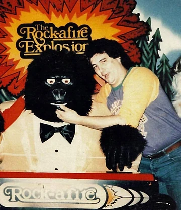

Showtapes
Want to know what shows we have in store? Well, you're in luck!
Here we have listed every showtape made for Showbiz Pizza!
Songs are randomized so every experience is unique!
Some songs include goofy skits with them!
Showtape information courtesy of ShowBizPizza.com.

Sal’s Birthday
1980-1981
ShowBiz Pizza Place Tape #1
- Heartaches
- Roast Beef Sandwich
- Catch-a-Wave
- Rolfe and Earl #1 - Hit the Cymbal
- School Days
1982
ShowBiz Pizza '82 Tape
- Welcome In
- Music Goes Round and Round
- Gee, Our 1st Album Commercial
- Little Sister
- Dragstrip in the Sky
- Goofy Gas Commercial
- Goin' Crazy
- My Love
- Hamlet Skit
- You May Be Right
- Feelings Skit
- Crying Skit
- Satisfaction Medley
- Baseball
Spring Shows '82 Tape
- Come for the Pizza Commercial
- Roncho Ad Skit
- Beatles Medley
- My Boyfriend's Back
- Banana Hill
- Unchained Melody
- Too Shy
- Goofy Gas
- Mr. Bassman
Tribute to Abbey Road Tape
- Elvis Medley
- Cotton Field
- Louisiana
- Tomorrow
- Child of the Rock
- Abbey Road Medley
Christmas '82 Tape
- 12 Days Of Christmas
- Rubber Biscuits
- Silent Night
- Secret Agent Man
- Disco Christmas
- Gloria
- Night Before Christmas
- Get Ready
- My Gal is Red Hot
- In December
New Years Eve '82
- New Years Intro Skit
- Earl Lang Xyme Skit
- Rock-afire Resolutions Skit
- When the Saints Go Marching In
- Banana Hill (Live)
- Mitzi's Joke
- Old Lang Xyme
1983
Crazy Colander Head Night Tape
- Mickey
- Colander Gazette Promotion
- Strain Your Brain
- Earl's Colander Promo
- Buddy Holly Medley
- Ezmerelda Memories Skit
- Down in New Orleans
- Fatz's Colander Promotion Skit
- Pretty Woman
- Teen Angel
- State Songs Skit
- Born To Run
- Earl Colander Promo Skit #2
- A Little 50's Rock And Roll
- Beach Boys Medley
- Walking The Dog
- Mony Mony
Country Night Tape
- Monkeyman Chewing Tobacco Skit
- Redneck Friend
- Country Bird Songs Skit
- Jackson
- You Never Even Call Me By My Name
- The Night They Drove Old Dixie Down
- Presidential Skit
- Guitarzan
- Desperado
- Stranded In The Jungle
- Swingin
- Sixteen Tons
Uncle Klunk Showtape
- Klunk Skit - Dueling Contest
- Funeral For a Friend / Love Lies Bleeding
- Klunk Skit - Pizza Expert
- Banana Hill Dedication Skit
- Banana Hill (Klunk)
- Klunk Skit - Dial an Argument
- My Woman My Woman My Wife
- Klunk Skit - Random Number
- Roast Beef Sandwich (Klunk)
Christmas 1983 Tape
- When Will I Be Loved
- On The Road Again
- Spaceman
- Feliz Navidad
- Happy Together
- Elvira
- Fire
- My Girl
1984
Magic Night Tape
- Magic Medley
- Fatz's Witch Story
- That Old Black Magic
- Letters To Looney Bird #1
- Little Arrows
- Dook's Magical Medley
- Multiple Voice Syndrome
- Puff the Magic Dragon
- Ambiance Skit
- Magic
- Letters to Looney Bird #2
- Every Little Thing She Does Is Magic
- Michael Jackson Medley
Senior Citizens Tape
- 1984 World's Fair
- They All Asked For You
- Grandparents Skit
- Grandma's Feather Bed
- Retro Medley
- Young At Heart (New Style)
- Startin' Something (Old Style)
- Swingin (Future Style)
- Classical Disco Skit
- Ballroom Dancing
- Studder Too Much
- American Trilogy
- Radio Skit
- Boogie Woogie Bugle Boy
- Five Guys Named Moe
Trivia Night Tape
- Trivia Question #1 - Science
- She Blinded Me With Science
- Trivia Question #2 - Austrailian Geography
- Land Down Under
- Trivia Question #3 - Elvis Medley Changes
- Spanish Elvis Medley
- Trivia Question #4 - Who's Never Introduced a Show
- Secrets That You Keep
- Trivia Question #5 - Tubes Trivia
- Talk to You Later
- Trivia Question #6 - B.J. Thomas' First Song
- B.J. Thomas Medley
- Letters To Looney Bird - Trivia Question #7
- Bang on My Drum
- Trivia Question #8 - Saliva
- Our Lips are Sealed
- Blues Brothers Medley
Trivia Night Tape
- Ricky Scaggs Medley
- Arguing Skit
- Letters to Looney Bird #3
- Fun Songs Skit
1985
Country Klunk Tape
- Better All Over
- Much To Young To Die
- My Own Grandpa
Top 10 Hits of 1985 Tape
- I will & One On One
1986
Time Machine / Hits 1 Tape
- The Time Machine
- Hits Show
Happy B-day Liberty Tape
- Announcement Skit
- The Liberty Show
- God Bless the USA
- The Unveiling of Liberty Skit
Circus / Monkees Tape
- Monkees Medley
- Tribute to the Circus
- The Curly Shuffle
2026
Volo Tape Tape
- Volo's Fun Fun Fun
Birthday
3-Birthday Reel
- Birthday (Beatles)
- Happy Birthday Medley
- Sal's Birthday